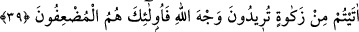

içinde fakirlerin yiyeceklerini, farz kılmıştır. Bir zenginin vermemesiyle bir fakir aç
kalırsa, muhakkak Allah bunu ondan soracaktır.”
Bazıları şöyle demiştir: “Âdemoğullarının üçüncü kralı Tahmurs zamanında fakirler
için zenginlere oruç farz kılındı. Onun zamanında kıtlık meydana geldi. Ardından
fakirlere şefkat göstermek, gündüzün yiyeceğini onlara vermek, Allah Teâlâ için kulluk
ve tevâzu olmak üzere zenginlere güneş battıktan sonra bir öğün yemek yemeleri ve
gündüz oruç tutmaları emredildi.
Zenginlerin vakfı, bağışı, konukluğu,
Zekâtı, fitresi, köle azat etmesi ve kurbanı vardır
Sen onların devletine nasıl erişirsin?
Çünkü şu iki rekâttan başka bir şey yapmıyorsun; o da yüz perişanlıkla.
İnsanın şerefi, cömertlik; üstünlüğü Hakk’a secde etmekledir.
Kim bu ikisine de sâhip değilse yokluğu varlığından yeğdir
39. İnsanların mallarında artış olsun diye verdiğiniz herhangi bir faiz, Allah
katında artmaz. Allâh’ın rızâsını isteyerek verdiğiniz zekâta gelince, işte zekâtı
veren o kimseler, evet onlar (sevaplarını ve mallarını) kat kat arttıranlardır.
“İnsanların mallarında artış olsun” fâiz yiyenlerin malları artsın ve çoğalsın “diye
verdiğiniz herhangi bir fâiz,” muâmele sırasında karşılıksız verdiğiniz herhangi bir
fazlalık “Allah katında artmaz.” Allah o kimse için o fâizi bereketli kılmaz. Nitekim
Allah Teâlâ: “Allah fâizi tüketir/mahveder” (el-Bakara, 2/276) buyurmuştur.
Ribâ/fâiz, bir yiyeceğin yiyecekle veya bir paranın parayla kendi cinsinden daha
fazlasıyla satılması sûretiyle miktarda olan fazlalıktır. Buna “ribe’l-fazl” denir. Ya da
ikisinden birinin bir süreye kadar satılması sûretiyle sürede olan fazlalıktır. Buna da
“ribe’n-nesâ’ ” denir. Her iki tür de haram kılınmıştır.
Bâzıları âyetteki ribâ/fâiz ile bir adamın, karşılığında kendisine daha üstününün
verilmesi için ihsanda bulunması ve hediye vermesinin kasdedildiğini söylemiştir. İşte
bu helâl ve câizdir. Fakat bu kimse bu yaptığından dolayı kıyâmette bir sevâba nâil
olamaz. Çünkü bununla Allâh’ın rızâsını istememiştir. Allah Teâlâ “Yaptığın iyiliği çok
görerek başa kakma.” (el-Müddessir, 74/6) yâni sana verilenden daha fazla verme ve
taleb etme, buyurduğu için böyle bir davranış Hz. Peygamber (a.s.)’a haramdı. Nitekim
Keşfü’l-esrâr’da böyle geçmektedir.
Fakîr (Bursevî) der ki: Allah Teâlâ’nın “herhangi bir fâiz” sözü işâret etmektedir ki